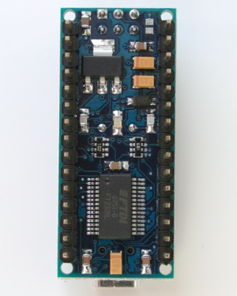
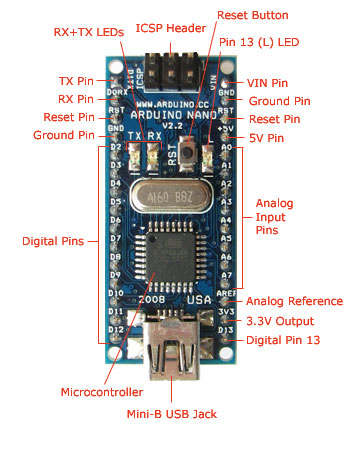
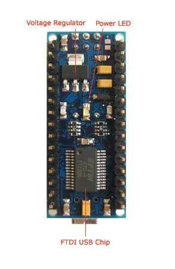

Arduino Nano
 |  |
Overview
The Arduino Nano is a small, complete, and breadboard-friendly board based on the ATmega328 (Arduino Nano 3.0) or ATmega168 (Arduino Nano 2.x). It has more or less the same functionality of the Arduino Duemilanove, but in a different package. It lacks only a DC power jack, and works with a Mini-B USB cable instead of a standard one. The Nano was designed and is being produced by Gravitech.
|  |  |
Schematic and Design
Arduino Nano 3.0 (ATmega328): schematic, Eagle files.
Arduino Nano 2.3 (ATmega168): manual (pdf), Eagle files. Note: since the free version of Eagle does not handle more than 2 layers, and this version of the Nano is 4 layers, it is published here unrouted, so users can open and use it in the free version of Eagle.
Specifications:
| Microcontroller | Atmel ATmega168 or ATmega328 |
| Operating Voltage (logic level) | 5 V |
| Input Voltage (recommended) | 7-12 V |
| Input Voltage (limits) | 6-20 V |
| Digital I/O Pins | 14 (of which 6 provide PWM output) |
| Analog Input Pins | 8 |
| DC Current per I/O Pin | 40 mA |
| Flash Memory | 16 KB (ATmega168) or 32 KB (ATmega328) of which 2 KB used by bootloader |
| SRAM | 1 KB (ATmega168) or 2 KB (ATmega328) |
| EEPROM | 512 bytes (ATmega168) or 1 KB (ATmega328) |
| Clock Speed | 16 MHz |
| Dimensions | 0.73" x 1.70" |
Power:
The Arduino Nano can be powered via the Mini-B USB connection, 6-20V unregulated external power supply (pin 30), or 5V regulated external power supply (pin 27). The power source is automatically selected to the highest voltage source.
The FTDI FT232RL chip on the Nano is only powered if the board is being powered over USB. As a result, when running on external (non-USB) power, the 3.3V output (which is supplied by the FTDI chip) is not available and the RX and TX LEDs will flicker if digital pins 0 or 1 are high.
Memory
The ATmega168 has 16 KB of flash memory for storing code (of which 2 KB is used for the bootloader); the ATmega328 has 32 KB, (also with 2 KB used for the bootloader). The ATmega168 has 1 KB of SRAM and 512 bytes of EEPROM (which can be read and written with the EEPROM library); the ATmega328 has 2 KB of SRAM and 1 KB of EEPROM.
Input and Output
Each of the 14 digital pins on the Nano can be used as an input or output, using pinMode(), digitalWrite(), and digitalRead() functions. They operate at 5 volts. Each pin can provide or receive a maximum of 40 mA and has an internal pull-up resistor (disconnected by default) of 20-50 kOhms. In addition, some pins have specialized functions:
- Serial: 0 (RX) and 1 (TX). Used to receive (RX) and transmit (TX) TTL serial data. These pins are connected to the corresponding pins of the FTDI USB-to-TTL Serial chip.
- External Interrupts: 2 and 3. These pins can be configured to trigger an interrupt on a low value, a rising or falling edge, or a change in value. See the attachInterrupt() function for details.
- PWM: 3, 5, 6, 9, 10, and 11. Provide 8-bit PWM output with the analogWrite() function.
- SPI: 10 (SS), 11 (MOSI), 12 (MISO), 13 (SCK). These pins support SPI communication, which, although provided by the underlying hardware, is not currently included in the Arduino language.
- LED: 13. There is a built-in LED connected to digital pin 13. When the pin is HIGH value, the LED is on, when the pin is LOW, it's off.
The Nano has 8 analog inputs, each of which provide 10 bits of resolution (i.e. 1024 different values). By default they measure from ground to 5 volts, though is it possible to change the upper end of their range using the analogReference() function. Additionally, some pins have specialized functionality:
- I2C: 4 (SDA) and 5 (SCL). Support I2C (TWI) communication using the Wire library (documentation on the Wiring website).
There are a couple of other pins on the board:
- AREF. Reference voltage for the analog inputs. Used with analogReference().
- Reset. Bring this line LOW to reset the microcontroller. Typically used to add a reset button to shields which block the one on the board.
See also the mapping between Arduino pins and ATmega168 ports.
Communication
The Arduino Nano has a number of facilities for communicating with a computer, another Arduino, or other microcontrollers. The ATmega168 and ATmega328 provide UART TTL (5V) serial communication, which is available on digital pins 0 (RX) and 1 (TX). An FTDI FT232RL on the board channels this serial communication over USB and the FTDI drivers (included with the Arduino software) provide a virtual com port to software on the computer. The Arduino software includes a serial monitor which allows simple textual data to be sent to and from the Arduino board. The RX and TX LEDs on the board will flash when data is being transmitted via the FTDI chip and USB connection to the computer (but not for serial communication on pins 0 and 1).
A SoftwareSerial library allows for serial communication on any of the Nano's digital pins.
The ATmega168 and ATmega328 also support I2C (TWI) and SPI communication. The Arduino software includes a Wire library to simplify use of the I2C bus; see the documentation for details. To use the SPI communication, please see the ATmega168 or ATmega328 datasheet.
Programming
The Arduino Nano can be programmed with the Arduino software (download). Select "Arduino Diecimila, Duemilanove, or Nano w/ ATmega168" or "Arduino Duemilanove or Nano w/ ATmega328" from the Tools > Board menu (according to the microcontroller on your board). For details, see the reference and tutorials.
The ATmega168 or ATmega328 on the Arduino Nano comes preburned with a bootloader that allows you to upload new code to it without the use of an external hardware programmer. It communicates using the original STK500 protocol (reference, C header files).
You can also bypass the bootloader and program the microcontroller through the ICSP (In-Circuit Serial Programming) header; see these instructions for details.
Automatic (Software) Reset
Rather then requiring a physical press of the reset button before an upload, the Arduino Nano is designed in a way that allows it to be reset by software running on a connected computer. One of the hardware flow control lines (DTR) of the FT232RL is connected to the reset line of the ATmega168 or ATmega328 via a 100 nanofarad capacitor. When this line is asserted (taken low), the reset line drops long enough to reset the chip. The Arduino software uses this capability to allow you to upload code by simply pressing the upload button in the Arduino environment. This means that the bootloader can have a shorter timeout, as the lowering of DTR can be well-coordinated with the start of the upload.
This setup has other implications. When the Nano is connected to either a computer running Mac OS X or Linux, it resets each time a connection is made to it from software (via USB). For the following half-second or so, the bootloader is running on the Nano. While it is programmed to ignore malformed data (i.e. anything besides an upload of new code), it will intercept the first few bytes of data sent to the board after a connection is opened. If a sketch running on the board receives one-time configuration or other data when it first starts, make sure that the software with which it communicates waits a second after opening the connection and before sending this data.